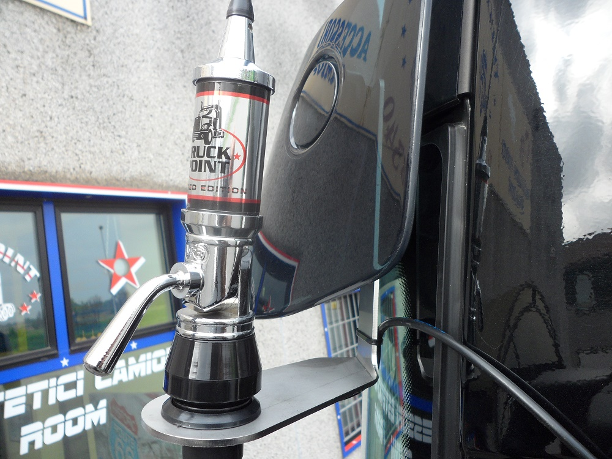

Bonus Ristrutturazione: ecco quando è possibile cedere credito a un familiare
 MAGAZINE MENU LIBERO VIRGILIO PAGINEGIALLE PGCASA PAGINEBIANCHE PAGINEBIANCHE SALUTE TUTTOCITTÀ DILEI SIVIAGGIA QUIFINANZA BUONISSIMO SUPEREVA NEWSONLINE Chiedi preventivo MAGAZINE Riparazioni casa
MAGAZINE MENU LIBERO VIRGILIO PAGINEGIALLE PGCASA PAGINEBIANCHE PAGINEBIANCHE SALUTE TUTTOCITTÀ DILEI SIVIAGGIA QUIFINANZA BUONISSIMO SUPEREVA NEWSONLINE Chiedi preventivo MAGAZINE Riparazioni casa
Bonus Ristrutturazione: ecco quando è possibile cedere credito a un familiare
L'Agenzia delle Entrate chiarisce una domanda posta da tanti contribuenti: ecco tutti i casi in cui si può cedere il credito a un parente
31-03-2021 Chiedi un preventivo per ristrutturazioni richiedi un preventivo gratisIl Bonus Ristrutturazione rappresenta una delle principali agevolazioni nate nel 2020 e confermate anche per l’anno in corso. Infatti è inserita all’interno della Legge di Bilancio in vigore per tutto l’anno. Il Bonus può essere fruito dai contribuenti sotto forma di detrazione in compensazione da richiedere tramite dichiarazione dei rettiti, ma anche come sconto in fattura da parte della ditta che effettua i lavori oppure cedendo a terzi l’importo totale . Molte persone si sono chieste: possono cedere il mio bonus a un parente? L’Agenzia delle Entrata ha confermato questa opportunità, ma a specifiche condizioni.
Bonus Ristrutturazione: un’occasione unica per risparmiare entro il 2021
La cessione a terzi del Bonus Ristrutturazione è possibile a partire dal 2020, nello specifico dall’entrata in vigore del Decreto Rilancio . L’agevolazione ha avuto un enorme successo, portando molte persone a risparmiare nella ristrutturazione degli immobili . Per tale motivo è stata confermata per tutte le spese sostenute fino al 31 dicembre 2021 . Questa agevolazione consente avere una detrazione del 50% delle spese ammissibili sostenute, fino a un totale di 96 mila euro . La detrazione massima è di 48 mila euro da suddividere in 10 rate annuali di pari importo.
Quindi, in fin dei conti, ristrutturare oggi è ancora più facile e conveniente. La detrazione si può scalare tramite dichiarazione dei redditi oppure ottenere in altri modi. Tra questi c’è appunto la cessione del credito a terzi . Per esempio, si può utilizzare per restituire un eventuale finanziamento bancario: in questo caso il pagamento viene emesso direttamente all’istituto. Ma ora l’Agenzia delle Entrate ha finalmente chiarito un questi importante: il credito si può cedere anche a un parente . Ma a specifiche condizioni.
Bonus Ristrutturazione: tutti i requisiti per cedere credito a un familiare
Innanzitutto, la cessione può avvenire solo per le spese sostenute nel 2020 e 2021 . Infatti, l’articolo 121 del Decreto Rilancio infatti non prevede particolari limitazioni legate alla cessione e non fa alcun riferimento sui rapporti interpersonali tra l’avente diritto e una terza persona, ente, azienda, istituto o altro organismo.
Detto ciò, il beneficiario può trasferire il contributo a chiunque anche aziende e familiari. Ma c’è un altro obbligo da ricordare: la data ultima di comunicazione.
Bonus Ristrutturazione: entro quando effettuare la comunicazione all’Agenzia delle Entrate
L’ Agenzia delle Entrate ha ricordato che nel caso si voglia cedere il credito bisogna inviare una apposita comunicazione online entro il 16 marzo dell’anno successivo a quello in cui si sostengono le spese di ristrutturazione . Quindi per tutte le spese sostenute nel 2021, bisogna comunicare la volontà di cedere il credito entro il 16 marzo 2021.
Scegli uno dei nostri migliori professionisti! Richiedi un preventivo gratis a ristrutturazioni CHIEDI ORA invia la tua richiesta gratis ricevi fino a 5 preventivi scegli il preventivo migliore ristrutturazioni agevolazioni POTREBBE INTERESSARTI Riparazioni casa Come trasformare il sottotetto in abitazione col Superbonus 110% Riparazioni casa Come sostituire un vetro della finestra rotto? Riparazioni casa Superbonus 110% addio: ecco le novità Riparazioni casa Ottenere il Superbonus 110% sarà più semplice: ecco cosa cambia Riparazioni casa Anas assegna 100 case cantoniere da ristrutturare e usare: ecco come fare domanda Riparazioni casa Ristrutturazione e riqualificazione: differenza e agevolazioni disponibili Rinnovare casa Lavori in casa: soluzioni per i tuoi progetti Lavori da fare in casa? Ricevi e confronta preventivi gratis dai migliori professionisti nella tua zona riscaldamento serramenti e infissi elettricisti idraulici traslochi imprese di pulizia TUTTE LE CATEGORIE
Da non perdere
Riparazioni casaCome ristrutturare casa a costo quasi zero
Riparazioni casaSuperbonus 110% interventi trainanti e trainati: caratteristiche e differenze
Riparazioni casaChe cos'è un soppalco regolabile e perché sceglierlo?
Riparazioni casaDetrazione infissi 2021: tutte le soluzioni possibili
Riparazioni casaPergolato sul balcone: tutto quello che devi sapere
Riparazioni casaBonifico parlante per ristrutturazione: quando usarlo e come compilarlo
Suggeriti
Riparazioni casaTutti i segreti per le pulizie di primavera: cosa c'è da sapere
Riparazioni casaRistrutturazione casa: tutto quello che c’è da sapere
Riparazioni casaLavori di ristrutturazione edile
Chiedi preventivi per: Serramenti e infissi Idraulici Ristrutturazioni Elettricisti Esterni e giardino Falegnami Notai Progettazione e design Condizionatori Fabbri Riscaldamento Imprese di pulizia Spurghi Imbianchini Antifurti e sicurezza Disinfestazioni Recinzioni Traslochi Riparazioni elettrodomestici Energie rinnovabili Arredamento Agenzie immobiliari aziende e professionisti Idraulici, Ristrutturazioni, Elettricisti, Giardinaggio, Fabbri, Architetti, Finestre, Notai, Serramenti, Falegnami, Installatori, Riscaldamento, Imprese di pulizia, Spurghi, Imbianchini, Antifurti e Sicurezza, Disinfestazione, Recinzioni, Traslochi, Riparazioni Elettrodomestici, Energie rinnovabili Tutte le aziende Tutti i marchi Magazine sei un professionista?Numero Verde: 800-011411
Mail: info@italiaonline.it
Scopri come registrare la tua attività LIBERO VIRGILIO PAGINEGIALLE PGCASA PAGINEBIANCHE PAGINEBIANCHE SALUTE TUTTOCITTÀ DILEI SIVIAGGIA QUIFINANZA BUONISSIMO SUPEREVA NEWSONLINE Chi siamo Note Legali Privacy Cookie Policy© Italiaonline S.p.A. 2021 Direzione e coordinamento di Libero Acquisition S.á r.l. P. IVA 03970540963
MAGAZINE Cambiare casa Cambiare casa Comprare casa Vendere casa Affittare casa Mutui casa Eredità e successioni immobili Notai, rogito e atti per la casa Traslochi e Sgomberi Ristrutturare casa Ristrutturare casa Impianto elettrico Impianto TV, antenna e Hifi Illuminazione Fabbri e lavorazioni in ferro battuto Serrature Serramenti Infissi Pavimenti e rivestimenti Arredamento Interni Recinzioni Esterni Manutenzioni e fai da te Manutenzioni e fai da te Imbianchini Riparazioni casa Riparazione elettrodomestici Idraulica Disinfestazione Falegnami Spurghi, fognature e fossa biologica Vivere casa Vivere casa Igiene e pulizie di casa Bagno, Doccia Giardinaggio Condizionatori Riscaldamento Antifurti e sicurezza Risparmio energetico e fotovoltaico paginegialle casa network pagine gialle pagine bianche tutto città PgCasa è un prodotto Italiaonline ╳ Accedi con le tue credenziali sei già registrato? OPPURE ACCEDI CON LIBERO VIRGILIO FACEBOOK GOOGLE Non preoccuparti, non pubblicheremo niente sui social network senza il tuo permesso. non hai un account? registrati con l email ╳ Chiedi un preventivo senza impegno ai professionisti della tua zona. riscaldamento serramenti e infissi elettricisti idraulici traslochi imprese di pulizia TUTTE LE CATEGORIE ╳